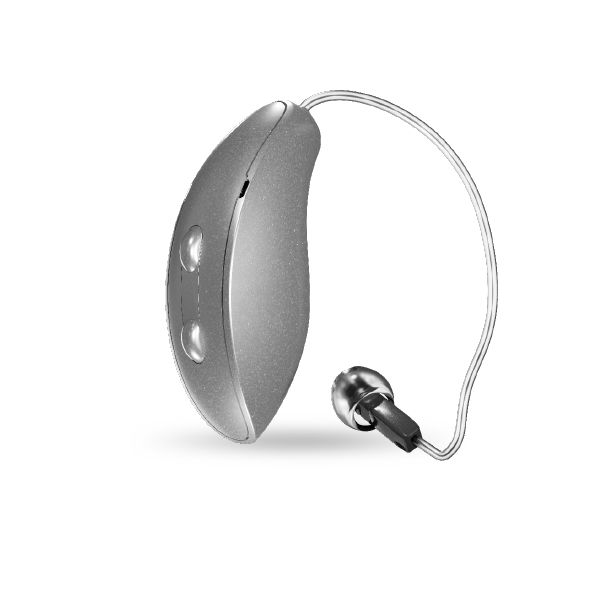
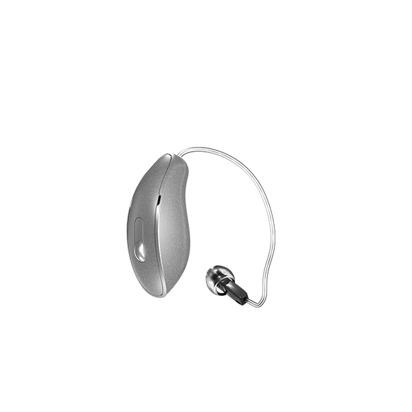

Prix & remboursement des appareils auditifs en Belgique.
Le prix d'un appareil auditif varie selon le niveau technologique, le type d'appareil et le suivi nécessaire. Chez AUDIOBEL, nous expliquons clairement le coût brut, l'intervention INAMI et le reste à charge.
Les montants et conditions de remboursement peuvent évoluer. Contactez-nous pour une vérification personnalisée avant toute décision.

Trois critères de base pour la prise en charge
Ces critères peuvent être adaptés selon votre dossier médical. Nous vérifions les conditions applicables avec vous.
- Perte auditive d'au moins 35 dB sur l'oreille à appareiller (selon les fréquences de référence).
- Prescription médicale par un médecin ORL.
- Période d'essai obligatoire de 28 jours minimum avec gain auditif objectivé d'au moins 5 dB.

Combien la sécurité sociale prend-elle en charge ?
Les montants suivants sont des indications basées sur les indexations 2026. Le montant exact dépend de votre statut (BIM/VIPO ou ordinaire) et de votre mutualité.
| Catégorie d'âge | 1 oreille (monophonique) | 2 oreilles (stéréophonique) |
|---|---|---|
| Moins de 18 ans | ≈ 1 451 € | ≈ 2 875 € |
| 18 à 64 ans | ≈ 884 € | ≈ 1 751 € |
| 65 ans et plus | ≈ 859 € | ≈ 1 701 € |
Les mutualités proposent souvent une intervention complémentaire (Partenamut, Mutualité chrétienne, Solidaris…). Nous vérifions avec vous, avant toute commande.
De l'ORL à la mutuelle, étape par étape
Nous vous accompagnons à chaque étape administrative pour limiter les démarches de votre côté.
Démarrer mon dossier- Consultation ORL
Bilan médical et prescription si nécessaire. - Bilan auditif AUDIOBEL
Examen complet en centre et choix du modèle adapté. - Essai 28+ jours
Test de l'appareil dans votre vie réelle. - Validation médicale & dossier
Constitution du dossier et envoi à la mutualité. - Réglages finaux & suivi
Ajustements après acceptation du remboursement.
Chaque dossier est unique.
En quelques minutes au téléphone, nous indiquons les conditions probables de prise en charge selon votre audition, votre prescription ORL et votre mutualité. Sans engagement.
Tout ce qu'on vous demande souvent
Devrai-je avancer des frais importants ?
Cela dépend du dossier et de votre mutualité. Nous clarifions le reste à charge avant toute validation, pour que vous sachiez exactement à quoi vous attendre.
Combien de temps dure l'essai ?
L'essai dure au moins 28 jours, en conditions réelles. Des réglages intermédiaires sont prévus selon votre ressenti, et un gain auditif d'au moins 5 dB doit être objectivé pour valider la prise en charge.
Que comprend l'accompagnement ?
Le choix du modèle, les réglages, le suivi régulier, l'entretien et l'accompagnement administratif pour le remboursement. Tant que vous portez vos appareils, nous restons à vos côtés.
Les montants sont-ils fixes ?
Non. Les conditions et montants INAMI ou mutualité évoluent (indexation, statut BIM/VIPO, règlement interne). Une vérification personnalisée juste avant la commande est recommandée.
Et si je ne suis pas satisfait pendant l'essai ?
L'essai n'engage à rien. Vous pouvez interrompre la procédure ou changer de modèle. Notre rôle est de trouver la bonne solution, pas de vendre à tout prix.
Un appel pour estimer votre prise en charge.
Plus efficace qu'un devis en ligne approximatif : nous vérifions votre situation réelle.